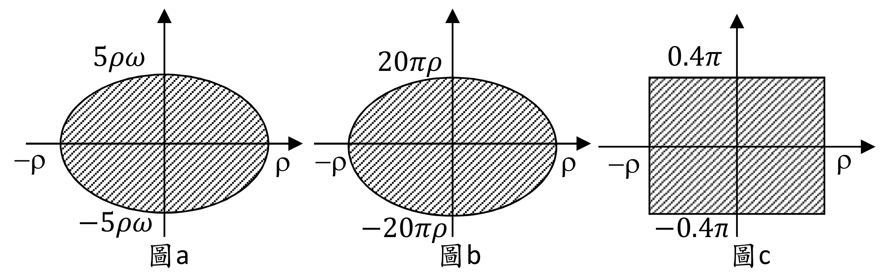
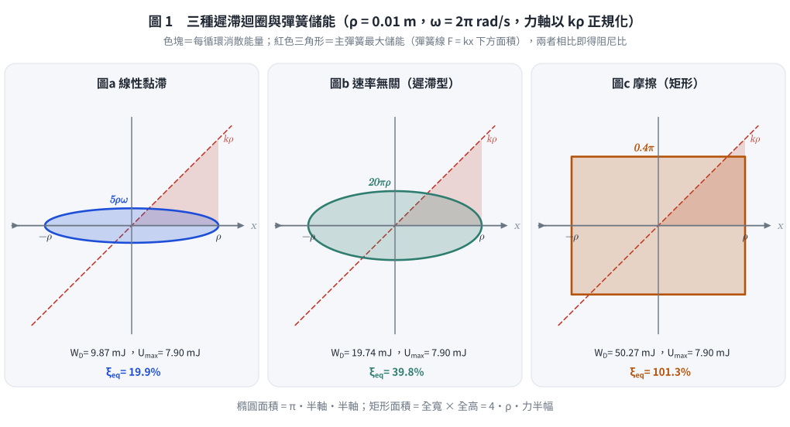
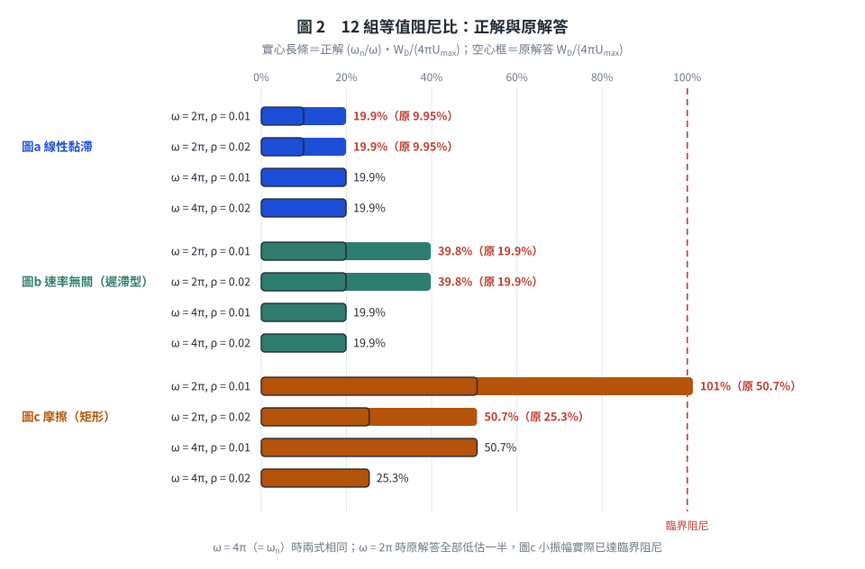
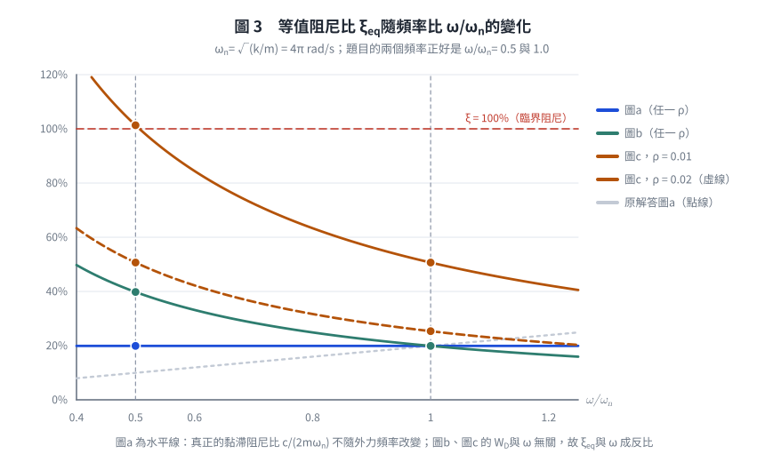

📄 題目正本：考卷原文・附圖・判讀清單（已確認）
SD-2023-4 題目正本
本檔只記錄考卷上寫了什麼、圖上畫了什麼，不含任何解法。解析見同資料夾
SD-2023-4.md。
判讀清單經使用者確認前，狀態為「待確認」；確認後本檔原則上不再修改（改動須回考卷原圖並記 log）。
| 項目 | 內容 |
|---|---|
| 考卷 | raw/exams/SD-2023_結構動力分析與耐震設計.pdf，第 2 頁（頁次 2－2），第四題 |
| 考年 | 2023（民國112年）專技高考結構工程技師「結構動力分析與耐震設計」 |
| 配分 | 25 分（㈠15 分、㈡10 分） |
| 附圖 | SD-2023-4-fig-1.png（舊擷取，圖下方空白處有手形游標）、SD-2023-4-fig-2.png（2026-11-16 由考卷 500 dpi 重擷取） |
| 判讀狀態 | 已確認（2026-11-16，使用者授權依 Claude 建議）（原轉錄：2026-11-16；PyMuPDF 110 dpi 整頁＋500 dpi 局部放大，PDF 文字層核對原文、PDF 向量座標核對附圖；盲讀於開啟解析前完成） |
1. 考卷原文（逐字）
四、已知單自由度動力系統之質量 m = 1 kg，勁度 k = $16\pi^2$ N/m。
㈠試求如下圖 a~c 所表現的三種遲滯迴圈特性的消能器分別在外力頻率為 $2\pi$ rad/sec、$4\pi$ rad/sec 作用下，振幅分別為 0.01 m，0.02 m 時的等值線性黏滯阻尼比（共計十二種組合）。圖 a 及圖 b 為橢圓形遲滯迴圈，圖 c 為矩形遲滯迴圈，且圖 a 中的符號 ω 表示振動頻率，所有力量單位為 N，質量單位為 kg，長度單位為 m。（15 分）
㈡詳細說明最新建築物耐震設計規範中建築物使用消能減震技術的數量以及安裝位置及消能器所能承受力量與位移之規定，並說明其規定用意。（10 分）
2. 考卷給的公式、附表與參數
- 考卷沒有給參考公式。
- 給定：$m=1$ kg、$k=16\pi^2$ N/m；外力頻率 $2\pi$、$4\pi$ rad/s；振幅 0.01 m、0.02 m；三種迴圈（圖 a、b 橢圓，圖 c 矩形）。
- 圖面參數：圖 a 縱軸截距 $\pm5\rho\omega$、橫軸 $\pm\rho$；圖 b 縱軸截距 $\pm20\pi\rho$、橫軸 $\pm\rho$；圖 c 矩形上下緣 $\pm0.4\pi$、左右 $\pm\rho$。
- 考卷沒有給：圖中 $\rho$ 的文字定義、座標軸名稱、等值黏滯阻尼比的定義式、是否以外力頻率或自然頻率計算。
- 卷首注意事項：㈠可以使用電子計算器。㈡不必抄題，作答時請將試題題號及答案依照順序寫在試卷上，於本試題上作答者，不予計分。㈢本科目除專門名詞或數理公式外，應使用本國文字作答。考試時間：2 小時。
3. 附圖

證據圖 SD-2023-4-fig-2.png（500 dpi 重擷取；舊圖 SD-2023-4-fig-1.png 內容相同，圖下方有手形游標）
圖面文字照錄：5ρω、−ρ、ρ、−5ρω、圖a；20πρ、−ρ、ρ、−20πρ、圖b；0.4π、−ρ、ρ、−0.4π、圖c
4. 判讀清單
| # | 項目 | 判讀 | 圖上／題文依據 | 把握 |
|---|---|---|---|---|
| 1 | 等值線性黏滯阻尼比定義 | 考卷沒有給。定案：以每循環消能 $E_D$ 等值，$c_{eq}=E_D/(\pi\omega\rho^2)$、$\xi_{eq}=c_{eq}/(2m\omega_n)$，亦即 $\xi_{eq}=\dfrac{1}{4\pi}\dfrac{\omega_n}{\omega}\dfrac{E_D}{E_{S0}}$（$E_{S0}=k\rho^2/2$，$\omega$ 為外力頻率）。理由：圖 a 為線性黏滯阻尼器（力 ∝ 速度），此定義使其阻尼比與頻率、振幅無關，物理上一致；只在 $\omega=\omega_n$ 時與 $E_D/(4\pi E_{S0})$ 相同 | 題文「等值線性黏滯阻尼比」「外力頻率」；圖 a 標 $5\rho\omega$ | 不確定（影響答案：$\omega\ne\omega_n$ 的組合差 $\omega_n/\omega$ 倍；依 Claude 建議定案） |
| 2 | 座標軸 | 橫軸為消能器變形（位移），縱軸為消能器力（N）；兩軸考卷皆未標名 | 題文「遲滯迴圈」「所有力量單位為 N」；橫軸交點 ±ρ | 確定（解讀） |
| 3 | $\rho$ | 振幅（題文的 0.01 m、0.02 m），橫軸最大位移 | 題文「振幅分別為…」；圖上橫軸極值 ±ρ | 確定（解讀） |
| 4 | 圖 a | 橢圓，最大力（$x=0$ 處）$5\rho\omega$ N，隨振幅與頻率成正比 | 圖面標註；橢圓中心在原點（PDF 向量：橢圓 x＝156.5–242.8、縱軸 x≈199.6 pt） | 確定 |
| 5 | 圖 b | 橢圓，$x=0$ 處力 $20\pi\rho$ N，與振幅成正比、與頻率無關 | 圖面標註 | 確定 |
| 6 | 圖 c | 矩形，力 $\pm0.4\pi$ N 定值（與振幅、頻率無關），位移範圍 $\pm\rho$ | 圖面標註；矩形對稱於縱軸（PDF 向量：矩形 x＝398.8–471.5、縱軸 x≈435.1 pt） | 確定（解讀） |
| 7 | 「圖 a 中的符號 ω 表示振動頻率」 | 即外力（穩態振動）圓頻率，單位 rad/s，代入 $2\pi$ 或 $4\pi$ | 題文 | 確定（解讀） |
| 8 | 自然頻率 | $\omega_n=\sqrt{k/m}$，由 $m=1$ kg、$k=16\pi^2$ N/m 求得 | 題文 | 確定 |
| 9 | 組合數 | 3 種迴圈 × 2 頻率 × 2 振幅＝12 種 | 題文「共計十二種組合」 | 確定 |
| 10 | ㈡規範依據 | 依現行建築物耐震設計規範及解說（111 年版）消能減震相關規定作答 | 題文「最新建築物耐震設計規範」 | 確定（解讀） |
| 11 | 考卷沒有給 | 阻尼比定義式、座標軸名稱、$\rho$ 的文字定義 | 題文、圖面 | 確定 |
轉錄：2026-11-16（SD-U3-2 題目正本推廣・組 U3-2-G4）
確認：2026-11-16 使用者授權依 Claude 建議確認（SD-U3-2 組 U3-2-G4，關卡一）
考題編號：SD-2023-4
主分類： SD-U3-2 隔減震原理
副分類： SD-U2-2 建築耐震設計規範
分析方法： 消能減震分析（等值線性黏滯阻尼比）
標籤： 消能減震 等效黏滯阻尼 遲滯迴圈 橢圓迴圈 矩形迴圈 等值阻尼比 能量法 黏滯阻尼器 摩擦阻尼器 耐震規範 消能器安裝規定
1. 題目（考卷原文見題目正本）
考卷原文、公式／附表、附圖與判讀清單（已確認）見
SD-2023-4-problem.md。本節只列解題時最容易讀錯的地方與本解使用的記號；題意以題目正本為準。
常見誤讀
| 項目 | 正確判讀 | 常見誤讀 |
|---|---|---|
| 等值阻尼比定義 | $\xi_{eq}=\dfrac{1}{4\pi}\dfrac{\omega_n}{\omega}\dfrac{W_D}{U_{max}}$，$\omega$ 為外力頻率（判讀 #1，使用者授權依建議確認） | 用 $W_D/(4\pi U_{max})$，漏乘 $\omega_n/\omega$（$\omega=2\pi$ 的 6 個答案低估一半） |
| 圖 a 的 $\omega$ | 外力（振動）圓頻率，代 $2\pi$ 或 $4\pi$ rad/s（判讀 #7） | 代自然頻率 $\omega_n$ |
| 圖 c | 力 $\pm0.4\pi$ N 為定值，位移範圍 $\pm\rho$（判讀 #6） | 把 $0.4\pi$ 乘上 $\rho$ |
| 座標軸 | 橫軸位移、縱軸力，$\rho$ 為振幅 0.01／0.02 m（判讀 #2、#3） | — |
| ㈡ 元件容量倍數 | 10.1.2：樓層主軸方向 4 組以上且剛心兩側各至少 2 組 → 最大考量地震最大總位移的 1.3 倍，否則 2.0 倍 | 一律 1.3 倍，或只要求 1.0 倍 |
本解記號： $W_D$ 每循環消能（題目正本記為 $E_D$）；$U_{max}=k\rho^2/2$（題目正本記為 $E_{S0}$）；$\omega_n=\sqrt{k/m}$；$c_{eq}=W_D/(\pi\omega\rho^2)$。
2. 考題核心精神與出題者意圖
核心觀念：
(一) 等值線性阻尼比的能量法公式 $\xi_{eq} = \dfrac{1}{4\pi}\cdot\dfrac{\omega_n}{\omega}\cdot\dfrac{W_D}{U_{max}}$（$\omega_n=\sqrt{k/m}=4\pi$；常見的簡化式 $W_D/(4\pi U_{max})$ 只在 $\omega=\omega_n$ 時成立），針對不同形狀的遲滯迴圈計算面積，代入求解。
(二) 規範第十章對消能元件的規定（數量與剛心兩側配置、模擬與安裝、最大考量地震下的位移與力容量）。
出題者意圖：
- 測驗能否從圖形中正確讀取遲滯迴圈面積（橢圓、矩形面積公式）
- 測驗對三種消能器物理特性的理解：圖a（線性黏滯，速率相關）、圖b（速率無關之遲滯型）、圖c（摩擦型）；兩個外力頻率刻意取 $\omega_n/2$ 與 $\omega_n$，考的是「哪一種的阻尼比會隨頻率變」
- 測驗對台灣耐震規範消能減震章節的掌握程度
3. 解題戰略地圖與陷阱分析
關鍵陷阱：
| # | 陷阱 | 應對策略 |
|---|---|---|
| 1 | 遲滯迴圈面積用錯形狀公式 | 橢圓面積 $= \pi ab$（非 $2ab$）；矩形面積 $= 4 \times$ 長 $\times$ 寬（半幅×半幅×4） |
| 2 | $U_{max}$ 的 $k$ 用錯 | $U_{max} = \frac{1}{2}k\rho^2$，此處 $k$ 是系統勁度（結構主彈簧 $k = 16\pi^2$），非消能器勁度 |
| 3 | 圖c的力不隨振幅變化 | 矩形高度 $= 0.4\pi$（常數），故 $W_D \propto \rho$；$\xi_{eq} \propto 1/(\rho\,\omega)$ |
| 4 | 漏掉頻率比 $\omega_n/\omega$ | 題目給 $m$ 就是要你算 $\omega_n = 4\pi$。$W_D/(4\pi U_{max})$ 只在共振時成立；任意 $\omega$ 下須乘 $\omega_n/\omega$。漏乘會讓 $\omega=2\pi$ 的 6 個答案全部低估一半 |
| 5 | 誤以為黏滯阻尼器的 $\xi$ 隨 $\omega$ 變 | 圖a 為 $c=5$ 的線性黏滯阻尼，$\xi = c/(2m\omega_n) = 5/(8\pi)$ 是固定值；會隨頻率變的是 $W_D$ 與 $\omega$ 無關的圖b、圖c |
三種消能器物理對應：
| 圖 | 迴圈形狀 | 力半幅 | 對應物理類型 | 阻尼比特性 |
|---|---|---|---|---|
| 圖a | 橢圓 | $5\rho\omega$ | 線性黏滯阻尼器（$c=5$ N·s/m） | 常數 $5/(8\pi)$（與 $\omega$、$\rho$ 均無關） |
| 圖b | 橢圓 | $20\pi\rho$ | 速率無關之遲滯型（結構）阻尼，$W_D$ 與 $\omega$ 無關 | $\propto 1/\omega$，與 $\rho$ 無關 |
| 圖c | 矩形 | $0.4\pi$ | 摩擦（Coulomb）阻尼器 | $\propto 1/(\rho\,\omega)$ |
3.5 變數層次分析（Variable Hierarchy Analysis）
複習提示：第一次解題後，在每個卡住的知識點旁標記
⚠；第二次複習時只看有⚠的項目。
最終目標
12 組 ξ_eq（圖a × 4 + 圖b × 4 + 圖c × 4）
本題關鍵公式（依計算順序）
$$\text{Step 1: } U_{max} = \frac{1}{2}k\rho^2 = \frac{1}{2}(16\pi^2)\rho^2 = 8\pi^2\rho^2$$
$$\text{Step 2: } W_D = \text{遲滯迴圈面積（依圖形）}$$
$$\text{Step 3: } \omega_n = \sqrt{k/m} = 4\pi \text{ rad/s}$$
$$\text{Step 4: } \xi_{eq} = \frac{\omega_n}{\omega}\cdot\frac{W_D}{4\pi U_{max}} = \frac{4\pi}{\omega}\cdot\frac{W_D}{32\pi^3\rho^2}$$
| 圖 | 迴圈形狀 | 面積公式 |
|---|---|---|
| 圖a | 橢圓（半軸 $\rho$，$5\rho\omega$） | $W_D = \pi \cdot \rho \cdot 5\rho\omega = 5\pi\rho^2\omega$ |
| 圖b | 橢圓（半軸 $\rho$，$20\pi\rho$） | $W_D = \pi \cdot \rho \cdot 20\pi\rho = 20\pi^2\rho^2$ |
| 圖c | 矩形（半寬 $\rho$，半高 $0.4\pi$） | $W_D = 4 \cdot \rho \cdot 0.4\pi = 1.6\pi\rho$ |
L1：題目直接給定
| 符號 | 數值 | 說明 |
|---|---|---|
| $m$ | 1 kg | 系統質量 |
| $k$ | $16\pi^2$ N/m | 系統勁度 |
| $\omega$ | $2\pi$ or $4\pi$ rad/s | 外力角頻率 |
| $\rho$ | 0.01 or 0.02 m | 振幅 |
L2：需知識點推導
| 符號 | 公式／來源 | 卡關? |
|---|---|---|
| $U_{max}$ | $\frac{1}{2}(16\pi^2)\rho^2 = 8\pi^2\rho^2$ | |
| 橢圓面積公式 | $W = \pi ab$（$a,b$ 為半軸長） | |
| 矩形面積公式 | $W = \text{全寬} \times \text{全高} = 2\rho \times 2(0.4\pi)$ | |
| $\omega_n$ | $\sqrt{k/m} = 4\pi$ rad/s | |
| $\xi_{eq}$ | $(\omega_n/\omega)\,W_D/(4\pi U_{max})$ |
L3：深層知識（不懂就卡住）
| 知識點 | 說明 | 卡關? |
|---|---|---|
| 等值阻尼比的能量定義 | 等值黏滯阻尼在頻率 $\omega$ 下每循環消能 $\pi c_{eq}\omega\rho^2$，令等於 $W_D$ 得 $c_{eq}$，再由 $\xi_{eq}=c_{eq}/(2m\omega_n)$ 得 $\xi_{eq} = \frac{\omega_n}{\omega}\frac{W_D}{4\pi U_{max}}$（Chopra 式 3.9.2）；共振時才退化為 $W_D/(4\pi U_{max})$ | |
| 線性黏滯阻尼器的遲滯迴圈為橢圓 | $x=\rho\sin\omega t$，$F=c\rho\omega\cos\omega t$，$x^2/\rho^2+F^2/(c\rho\omega)^2=1$ | |
| 摩擦阻尼器的遲滯迴圈為矩形 | Coulomb 摩擦力大小恆定 $= \mu N$，故力不隨位移和速度變化 | |
| $U_{max}$ 用系統彈簧（非消能器勁度） | 等值阻尼比是相對於系統自身的彈性儲能，分母用 $k_{system}$ |
4. 步驟化詳細計算過程
第(一)題：12 種等值線性黏滯阻尼比（15 分）
核心公式
系統自然頻率：
$$\omega_n = \sqrt{\frac{k}{m}} = \sqrt{\frac{16\pi^2}{1}} = 4\pi \text{ rad/s}$$
等值黏滯阻尼在外力頻率 $\omega$ 下每循環消能 $\pi c_{eq}\,\omega\,\rho^2$，令其等於遲滯迴圈面積 $W_D$：
$$c_{eq} = \frac{W_D}{\pi\omega\rho^2}, \qquad \xi_{eq} = \frac{c_{eq}}{2m\omega_n} = \frac{1}{4\pi}\cdot\frac{\omega_n}{\omega}\cdot\frac{W_D}{U_{max}}, \qquad U_{max} = \frac{1}{2}k\rho^2 = 8\pi^2\rho^2$$
簡化式 $W_D/(4\pi U_{max})$ 是 $\omega = \omega_n$ 時的特例。本題 $\omega = 2\pi = \omega_n/2$ 時，$\omega_n/\omega = 2$，不可省略。

圖 1 三種遲滯迴圈與彈簧儲能。色塊是 $W_D$，紅色三角形是 $U_{max}$，兩者都畫在同一把力尺上。可以攔下兩種錯誤：橢圓面積誤用 $2ab$ 或矩形漏乘 4，以及把 $U_{max}$ 誤算成消能器自身的儲能（$U_{max}$ 屬於彈簧線 $F=kx$，不屬於迴圈）。
圖a：橢圓迴圈，力半幅 $= 5\rho\omega$（線性黏滯阻尼器，$c=5$ N·s/m）
$$W_D^{(a)} = \pi \cdot \rho \cdot 5\rho\omega = 5\pi\rho^2\omega$$
$$\xi_{eq}^{(a)} = \frac{1}{4\pi}\cdot\frac{4\pi}{\omega}\cdot\frac{5\pi\rho^2\omega}{8\pi^2\rho^2} = \frac{5}{8\pi}$$
$\omega$ 與 $\rho$ 都相消。 這正是線性黏滯阻尼器的本質：$\xi = c/(2m\omega_n) = 5/(2\cdot1\cdot4\pi) = 5/(8\pi)$，與外力頻率無關。
| 外力頻率 $\omega$ | 振幅 $\rho$ | $W_D^{(a)}$ (J) | $\xi_{eq}^{(a)}$ |
|---|---|---|---|
| $2\pi$ rad/s | 0.01 m | $10^{-3}\pi^2$ | $\dfrac{5}{8\pi} \approx \mathbf{19.9\%}$ |
| $2\pi$ rad/s | 0.02 m | $4\times10^{-3}\pi^2$ | $\dfrac{5}{8\pi} \approx \mathbf{19.9\%}$ |
| $4\pi$ rad/s | 0.01 m | $2\times10^{-3}\pi^2$ | $\dfrac{5}{8\pi} \approx \mathbf{19.9\%}$ |
| $4\pi$ rad/s | 0.02 m | $8\times10^{-3}\pi^2$ | $\dfrac{5}{8\pi} \approx \mathbf{19.9\%}$ |
$$\boxed{\xi_{eq}^{(a)} = \frac{5}{8\pi} \approx 19.9\% \quad \text{（四種組合均相同）}}$$
圖b：橢圓迴圈，力半幅 $= 20\pi\rho$（速率無關之遲滯型阻尼）
$$W_D^{(b)} = \pi \cdot \rho \cdot 20\pi\rho = 20\pi^2\rho^2 \quad\text{（與 } \omega \text{ 無關）}$$
$$\xi_{eq}^{(b)} = \frac{1}{4\pi}\cdot\frac{4\pi}{\omega}\cdot\frac{20\pi^2\rho^2}{8\pi^2\rho^2} = \frac{5}{2\omega}$$
$\rho$ 相消，$\xi_{eq}^{(b)}$ 與 $\omega$ 成反比。
| 外力頻率 $\omega$ | 振幅 $\rho$ | $W_D^{(b)}$ (J) | $\xi_{eq}^{(b)}$ |
|---|---|---|---|
| $2\pi$ rad/s | 0.01 m | $2\times10^{-3}\pi^2$ | $\dfrac{5}{4\pi} \approx \mathbf{39.8\%}$ |
| $2\pi$ rad/s | 0.02 m | $8\times10^{-3}\pi^2$ | $\dfrac{5}{4\pi} \approx \mathbf{39.8\%}$ |
| $4\pi$ rad/s | 0.01 m | $2\times10^{-3}\pi^2$ | $\dfrac{5}{8\pi} \approx \mathbf{19.9\%}$ |
| $4\pi$ rad/s | 0.02 m | $8\times10^{-3}\pi^2$ | $\dfrac{5}{8\pi} \approx \mathbf{19.9\%}$ |
圖c：矩形迴圈，力半幅 $= 0.4\pi$（摩擦阻尼器，Coulomb 型）
$$W_D^{(c)} = 2\rho \times 2(0.4\pi) = 1.6\pi\rho$$
$$\xi_{eq}^{(c)} = \frac{1}{4\pi}\cdot\frac{4\pi}{\omega}\cdot\frac{1.6\pi\rho}{8\pi^2\rho^2} = \frac{0.2}{\pi\,\omega\,\rho}$$
$\xi_{eq}^{(c)}$ 同時與 $\omega$、$\rho$ 成反比。
| 外力頻率 $\omega$ | 振幅 $\rho$ | $W_D^{(c)}$ (J) | $\xi_{eq}^{(c)}$ |
|---|---|---|---|
| $2\pi$ rad/s | 0.01 m | $0.016\pi$ | $\dfrac{10}{\pi^2} \approx \mathbf{101\%}$ |
| $2\pi$ rad/s | 0.02 m | $0.032\pi$ | $\dfrac{5}{\pi^2} \approx \mathbf{50.7\%}$ |
| $4\pi$ rad/s | 0.01 m | $0.016\pi$ | $\dfrac{5}{\pi^2} \approx \mathbf{50.7\%}$ |
| $4\pi$ rad/s | 0.02 m | $0.032\pi$ | $\dfrac{2.5}{\pi^2} \approx \mathbf{25.3\%}$ |
匯總表（12 種組合）
| 消能器 | $\omega=2\pi$, $\rho=0.01$ | $\omega=2\pi$, $\rho=0.02$ | $\omega=4\pi$, $\rho=0.01$ | $\omega=4\pi$, $\rho=0.02$ |
|---|---|---|---|---|
| 圖a（線性黏滯） | $5/(8\pi) \approx \mathbf{19.9\%}$ | $5/(8\pi) \approx \mathbf{19.9\%}$ | $5/(8\pi) \approx \mathbf{19.9\%}$ | $5/(8\pi) \approx \mathbf{19.9\%}$ |
| 圖b（速率無關） | $5/(4\pi) \approx \mathbf{39.8\%}$ | $5/(4\pi) \approx \mathbf{39.8\%}$ | $5/(8\pi) \approx \mathbf{19.9\%}$ | $5/(8\pi) \approx \mathbf{19.9\%}$ |
| 圖c（摩擦型） | $10/\pi^2 \approx \mathbf{101\%}$ | $5/\pi^2 \approx \mathbf{50.7\%}$ | $5/\pi^2 \approx \mathbf{50.7\%}$ | $2.5/\pi^2 \approx \mathbf{25.3\%}$ |

圖 2 12 組 $\xi_{eq}$ 的正解與簡化式比較。$\omega = 4\pi$ 這一列兩式完全重合，$\omega = 2\pi$ 這一列簡化式全部只有一半。可以攔下「漏乘 $\omega_n/\omega$」的錯誤，也能看出圖c 在小振幅、低頻時已超過臨界阻尼，等值線性化不再適用。
規律總結：
- 圖a（黏滯型）：$\xi_{eq}$ 為常數，與 $\omega$ 和 $\rho$ 均無關，因為 $W_D \propto \omega$ 剛好抵消 $\omega_n/\omega$
- 圖b（速率無關型）：$W_D$ 與 $\omega$ 無關，故 $\xi_{eq} \propto 1/\omega$，與 $\rho$ 無關
- 圖c（摩擦型）：$W_D \propto \rho$，故 $\xi_{eq} \propto 1/(\rho\,\omega)$，小振幅、低頻時最大
- 命題者刻意讓三者在 $\omega = \omega_n$ 時，圖a 與圖b 相等（$5/(8\pi)$），用來對比「速率相關」與「速率無關」兩種消能機制

圖 3 $\xi_{eq}$ 隨 $\omega/\omega_n$ 的變化，題目的 12 個點都落在曲線上。可以攔下「黏滯阻尼器的 $\xi$ 隨 $\omega$ 增大」這個錯誤：灰色點線就是簡化式算出的圖a，在 $\omega \neq \omega_n$ 時明顯偏離真正的水平線。
第(二)題：消能減震規範規定（10 分）
依現行《建築物耐震設計規範及解說》第十章「含被動消能系統建築物之設計」：
【一】消能元件數量（10.1.2）
- 某樓層於主軸方向設置 4 組以上消能元件，且於樓層剛心兩側各至少 2 組時：消能元件應能承受依最大考量地震計算之最大總位移的 1.3 倍；速度相依元件另應能承受對應最大總速度 1.3 倍之力。
- 未符合上述（少於 4 組，或剛心某一側不足 2 組）時：倍數提高為 2.0 倍。
規定用意： 元件數量多且分布於剛心兩側時，系統贅餘度高，單一元件失效或性能偏差的影響小，扭轉也較受控制；元件少或偏置時，以較大的位移與力容量作為保守措施。
【二】安裝位置與模擬（10.1.1、10.2、10.3、10.5）
- 數學模型須納入消能元件的平面與豎向配置（空間分布），以反映其對扭轉與各層反應的影響；
- 連接消能元件與結構的子結構（斜撐、接頭、基礎）撓度足以影響行為者，須計入其勁度；
- 元件端部須能協調或束制多軸變形，與分析假設一致。
- 實務配置原則（非條文）：配置於層間變位或層間速度較大的位置、平面對稱以免加劇扭轉、沿高度連續以免造成勁度／強度不規則。
規定用意： 消能效果取決於元件實際受到的相對變位與速度；若把柔性支撐構架當成剛性，會高估消能效果，忽略其勁度則會低估整體側向勁度。
【三】消能元件及其連接構材的力量與位移
- 元件容量：最大考量地震下的最大總位移（速度相依元件另含最大總速度對應之力）乘以 1.3 或 2.0（見【一】）；
- 連接構材：傳遞消能元件力量的構材與接頭應保持線彈性；
- 構材設計狀態：取最大位移時、最大速度時（位移為零）、最大加速度時三種狀態的最不利者（10.3 節）；
- 中小度地震：位移型消能元件及主結構不得降伏，層間相對側向位移角不得超過 0.005（10.4 節）；
- 原型試驗：每種元件至少兩組全尺寸試體，含風力設計位移循環（不少於 2000 次）與最大考量地震位移循環（10.7 節）；
- 有效阻尼超過臨界阻尼 30% 時，須改用非線性分析。
規定用意：
- 位移與力容量取最大考量地震並放大：消能元件在超過設計地震時不先失效，否則結構會在最需要阻尼時失去阻尼、位移遽增；
- 連接保持彈性：連接是傳力路徑上最薄弱的環節，連接先壞則元件失效，屬容量設計原則；
- 中小度地震不降伏、位移角限制：確保結構與位移型元件在常遇地震下保持彈性、可繼續使用；
- 試驗：元件性能（含溫度、速率、疲勞效應）須以全尺寸試驗證實，不可只憑型錄值。
條文來源：國土管理署網站公布之《建築物耐震設計規範及解說》第十章檔案（未標示版本，參考文獻至 BSSC 2000；條號與數值以 111 年版公報核對，條文待核版本）。
5. 關鍵爭議點與進階探討
爭議點1：$U_{max}$ 應用消能器勁度還是系統勁度？
當消能器含有彈性勁度分量（如黏彈性阻尼器），系統總勁度 $k_{total} = k + k_d$，嚴格應以 $k_{total}$ 計算 $U_{max}$。但本題消能器的彈性分量未明確給出，且題目給定的系統勁度 $k = 16\pi^2$ 即為主彈簧，計算等值阻尼比時 $U_{max}$ 用主彈簧 $k$ 計算（假設消能器為純消能元件，無彈性儲能）。
爭議點2：摩擦阻尼器的「等值」概念限制
摩擦阻尼器（圖c）在 $\omega=2\pi$、$\rho=0.01$ 時 $\xi_{eq} = 10/\pi^2 \approx 101\%$，已超過臨界阻尼。等值線性化假設系統仍以穩態簡諧振動，$\xi_{eq} \geq 1$ 時這個前提已不成立（摩擦力 $0.4\pi \approx 1.26$ N 接近彈簧力 $k\rho \approx 1.58$ N，甚至可能出現黏滯不動），此時數值只能當作比較指標，需改用非線性時間歷程分析。
爭議點3：簡化式 $W_D/(4\pi U_{max})$ 何時可用？
規範（如 FEMA、ASCE 7）的等效阻尼 $\beta = W_D/(4\pi E_S)$ 是以結構在自身週期附近振動為前提，等同於取 $\omega=\omega_n$。本題明確給定外力頻率且 $\omega \neq \omega_n$，必須用完整式。判斷方法：題目若給 $m$、$k$ 且外力頻率不等於 $\omega_n$，就要乘 $\omega_n/\omega$。
爭議點4：㈡ 的條文來源
本庫舊版 ㈡ 自標「待查證」，寫「力量放大係數 Ω＝1.3」「位移容量 ≥ MCE 位移 ×（通常 ≥1.0 倍）」「溫度範圍 0～50°C」等，接近 ASCE 7 第 18 章但未附條號。現改依規範第十章：容量倍數依元件數量與剛心兩側配置分 1.3 倍／2.0 倍（10.1.2），並補中小度地震不降伏與位移角 0.005、原型試驗等規定。舊版「溫度範圍」「可獨立更換」非條文，已刪除（溫度效應改併入試驗要求的說明）。
進階觀念：消能器效率比較
| 類型 | $\xi_{eq}$ 特性 | 優點 | 缺點 |
|---|---|---|---|
| 線性黏滯（圖a） | 常數 $c/(2m\omega_n)$ | 阻尼比穩定、不隨振幅頻率變；力與位移相差 90°，不增加最大內力 | 需注意漏油、溫度對 $c$ 的影響 |
| 速率無關遲滯型（圖b） | $\propto 1/\omega$ | 每循環消能固定，低頻（長週期）時效果相對較高 | 實際黏彈性材料受溫度、頻率影響大 |
| 摩擦型（圖c） | $\propto 1/(\rho\,\omega)$ | 結構簡單，成本低；小振幅時等值阻尼比高 | 力量需超過起滑力才作動；大振幅時效果遞減 |
圖解補繪：2026-10-05（向量圖，腳本 gen_SD-2023-4.py，可重跑） ｜ 第(一)題修正：補上頻率比 $\omega_n/\omega$
修正日期：2026-11-16（§1 改為指向題目正本）
修正日期：2026-11-16（勘誤：§4㈡ 消能減震規定改依現行規範第十章（10.1.2 元件數量：樓層主軸方向 4 組以上且剛心兩側各至少 2 組 → 最大考量地震最大總位移 1.3 倍，否則 2.0 倍；連接構材保持彈性；中小度地震不降伏、位移角 0.005；原型試驗），刪除未附條號的「Ω＝1.3」「≥1.0 倍」「溫度範圍 0～50°C」；§1 常見誤讀、§2、§5 同步。標頭主分類 SD-U3-1 改為與索引一致的 SD-U3-2、副分類改 SD-U2-2（索引為準，非勘誤）。㈠ 12 組等值阻尼比不變。依據：國土管理署網站規範第十章檔案（條文待核版本）。驗證：scripts/fixes/2026-11-16_verify_SD-2023-4.py，MISMATCHES: 0；盲解比對 B-U3-2-G4 建議補列「每樓層每主軸方向至少 2 組」，依條文改寫為 4 組／剛心兩側各 2 組與容量倍數的關係）